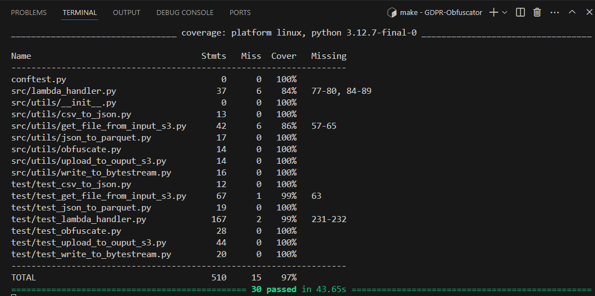

Project 5 - Unit Testing and PEP8 Compliance
AWS Testing with Pytest and Moto
Let's illustrate unit-testing with Pytest and the use of Moto for the mocking of AWS storage containers in order to minimise costs, as tests sessions may sometimes be laborious during development and refactoring processes. For this convenient purpose, we are using Project 7 as an example to illustrate the testing processes for desired outcomes.

In the above example, we can note the following observations:
- A S3 bucket is mocked with a Pytest fixture in order to test the upload_to_output_s3.py module.
- The Pytest fixture is defined to yield a boto3.client() connection and create the mocked bucket which is then passed as an argument (mock_s3_bucket) of the test module.
- As noted previously, this method is also very convenient in order to run tests involving big data or labourious tests session that are likely to incur costs if run directly on an actual AWS S3 storage.
Here is below a screenshot from Project 7 (UK GDPR Obfuscator) showing unit-tests results for all the modules (including the Lambda handler itself testing the actual AWS infrastructure from input to output):

The 30 tests successfully passed in 32.58s, almost half than the 1 minute target of the Minimal Viable Product initially required.
PEP8 testing modules for Python 3
In order to ensure PEP8 compliance, coverage tests and safety issues need to be assessed. This project is using Coverage as a pluging for Pytest, but there is a large variety of options that exist to measure how much of our code is being tested. Here is below a screenshot of coverage tests with the Coverage plugin from Project 7 (UK GDPR Obfuscator):

Our coverage was of 95% as the project required the insertion of commented paragraph to facilitate the implementation process by other teams. Ideally however, at the prodution phase a coverage of 100% is usually the standard expected as comments are no longer required in the final code.
Nowadays, Test-Driven Development has become a fundamental and required skill for efficient collaborative team work and rigouruous version control management.
Software Devops and JUnit 4 Testing with JAVA 5
This section dedicated to JAVA Core for software devops is following the logic of Pytest's automated testing, by presenting a similar basic testing approach with a rigourous language as JAVA that will require speficications of types for all declared variables prior to execution. JAVA is a compiled language, which implies that types specification requirements will ensure that:
- only expected types are processed to avoid compiling errors
- all types of errors and exceptions are intercepted and managed accordingly
- the execution runtime is minimised and optimised after refactoring and testing
The integration of JUnit for the automation of unit tests makes JAVA a robust and efficient language for software developement and interface deployment.
I have forked a Final Project presentation by my Team members presented at the end or a 2-weeks JAVA Core Sprint by Sparta Education, a solution for the games called Snap and Black Jack. This problem-solving situation is a good oppotunity to demonstrate JAVA Core capabilities.
The gaming software to build requires the welcome page to run in an infinite loop until the user choses a game option between Snap and Black Jack to start the game. I am proposing to test this functionality and illustrate how this can achieved in JAVA with the robustness of JUnit testing.
A full presentation of the project is available on the dedicated repository (link below):
[GitHub Repository (The Snap and Black Jack Games)]
Here is below the team's solution for the WelcomeMessage module in JAVA:


After the welcomeSelection menu, the Sorting menu selected is displayed for the input validation stage to be excecuted:


The team found that most methods of the WelcomeSelection.java class were private and therefore not testable via imports. In this case, critical thinking requires to find another testing approch to ensure the quality and effectiveness of the provided solution since interactivity plays a key part in the software design.
The sowftare was first tested manually in the Intellij IDEA JDK interface. However, in terms of automation, the initial display could be tested by running the game and checking the logs for the expecting string to be printed.
Let's test that this WelcomeSelection functionnality works as intented with the JUnit Testing module by writing 3 tests as illustrated below:

This screenshot of the development interface provided by Intellij IDEA JDK is a summarised example demonstrating the "Red-Green-Refactor" principle pertaining to JUnit plugins and highlighting parts of the source code (Red and green colouring for failed and passed tests respectively). This principle is common practice among developers as tests scripts are often written before providing the solution code in order to ensure that the ideal solution should pass all expected purity and accuracy tests (software's interactive behaviour).
The screenshot above shows an example of console output after running our JUnit tests in the Intellij IDEA Java Development Kit(JDK) interface.